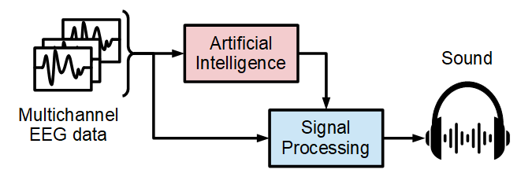

Welcome to the survey! You are about to hear newborn brainwaves!
Electroencephalography (EEG) is a very useful tool to analyse the electrical activity of the brain, in particular to detect seizure events.
Background: Seizures are associated with abnormal electrical discharges of the brain. Often the signs and symptoms induced by neonatal seizures are subtle and difficult to detect clinically. Therefore, EEG plays an essential role in detecting the neonatal seizures as well as monitoring the treatment response.
Problem: Significant training is required to visually interpret neonatal EEG signals. This expertise is not available 24/7 onsite. Moreover, the process of reviewing hours of EEG can be time-consuming as seizures can be rare events occuring for relatively short periods of time.
Solution: Exploring advanced signal processing and artificial intelligence (AI) techniques, a method that converts EEG to sound was developed in the EmbeddedSystems lab, School of Engineering, UCC. This method allows for revision of hours of neonatal EEG in a matter of seconds by a healthcare professional who was not trained in neonatal EEG interpretation. The AI-driven EEG-to-sound conversion focuses listener's attention to "interesting" seizure-like segments while compressing long EEG background activity.
This study aims to assess the accuracy of the developed sonification method in detecting the presence of seizures in a chosen EEG recording.
Next
An open-source neonatal EEG dataset was used for the purpose of this research. The authors of this work want to thank Helsinki University Hospital for making this dataset publicly available.
Dataset source:
Stevenson, N., Tapani, K., Lauronen, L. et al. A dataset of neonatal EEG recordings with seizure annotations.Sci Data 6, 190039 (2019). https://doi.org/10.1038/sdata.2019.39